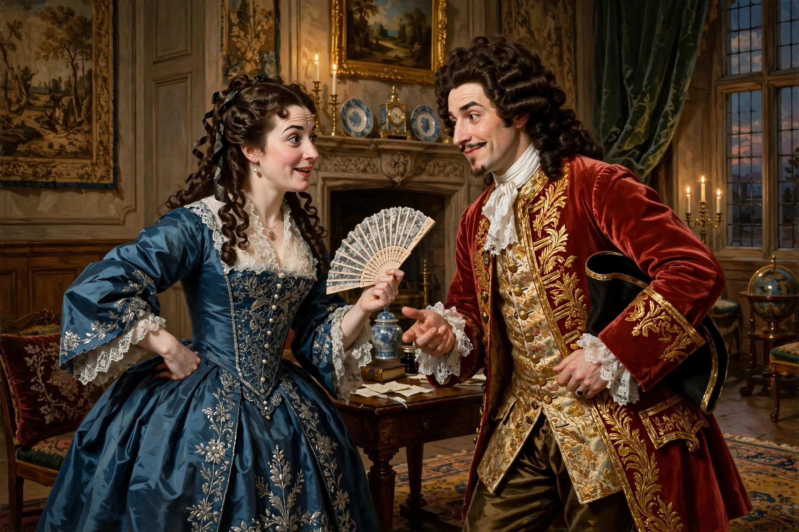

Restoration comedy

Restoration comedy is English comedy written and performed in the Restoration period, from the reopening of the theatres in 1660 until around 1710. Also known as the "comedy of manners", it is famous for its wit, urbanity and sexual explicitness — a frankness that delighted the aristocratic audience of Charles II's court but later shocked audiences, causing many plays to fall out of repertory until the mid-20th century.
Context
The Puritan Commonwealth had closed London's theatres in 1642. When Charles II was restored in 1660, he issued patents to two companies (the King's Company and the Duke's Company) and brought back from exile French and Italian theatrical influences. The new playhouses were smaller and pricier, and the audience was predominantly courtly and fashionable. For the first time in England, women played female roles professionally.
Characteristics
Restoration comedies typically feature:
- Intrigue plots of courtship and adultery among the fashionable elite
- Stock figures: the rake-hero, the witty heroine, the fop, the country bumpkin, the ageing coquette
- Rapid-fire witty dialogue ("repartee") and prose rather than verse
- Marriage as social and financial transaction, contrasted with love matches
- Influences from Spanish intrigue drama, French comedy (Molière), and Jonsonian humours
Playwrights and plays
- William Wycherley — The Country Wife (1675), notorious for the "china scene"; The Plain Dealer
- William Congreve — The Way of the World (1700), often considered the finest of the genre, with Millamant and Mirabell; Love for Love
- George Etherege — The Man of Mode (1676)
- John Dryden — Marriage à-la-Mode
- Aphra Behn — The Rover (1677), the most successful woman dramatist of the period
- George Farquhar — The Beaux' Stratagem (1707), a late, more humane example
- John Vanbrugh — The Provoked Wife, The Relapse
Actresses
The introduction of actresses — among them Nell Gwyn, also Charles II's mistress, and Elizabeth Barry — changed playwriting, enabling breeches roles, realistic love scenes and a new emphasis on female wit. Actresses' reputations were often precarious, but leading performers gained celebrity and significant earnings.
Decline and revival
Jeremy Collier's Short View of the Immorality and Profaneness of the English Stage (1698) attacked the plays' licentiousness, and taste shifted toward sentimental comedy. For two centuries Restoration comedy was rarely staged uncut, though Charles Lamb defended its artificial brilliance. Major 20th- and 21st-century revivals restored the plays to the repertory.